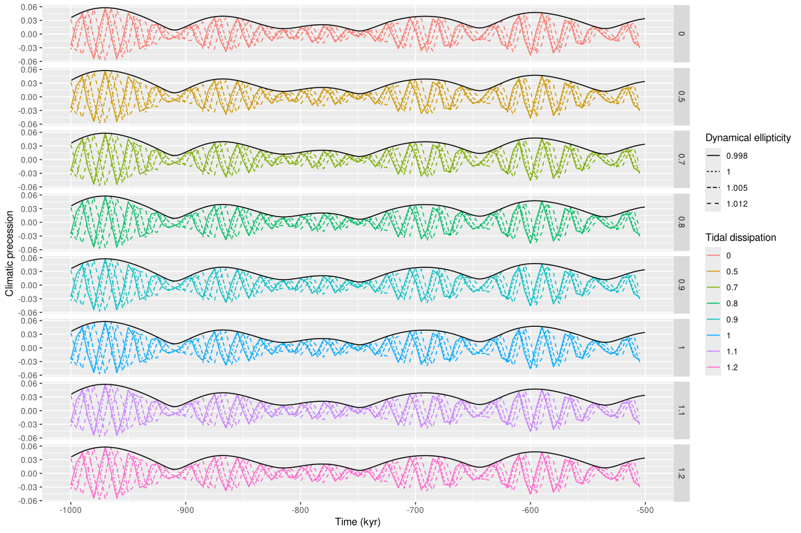
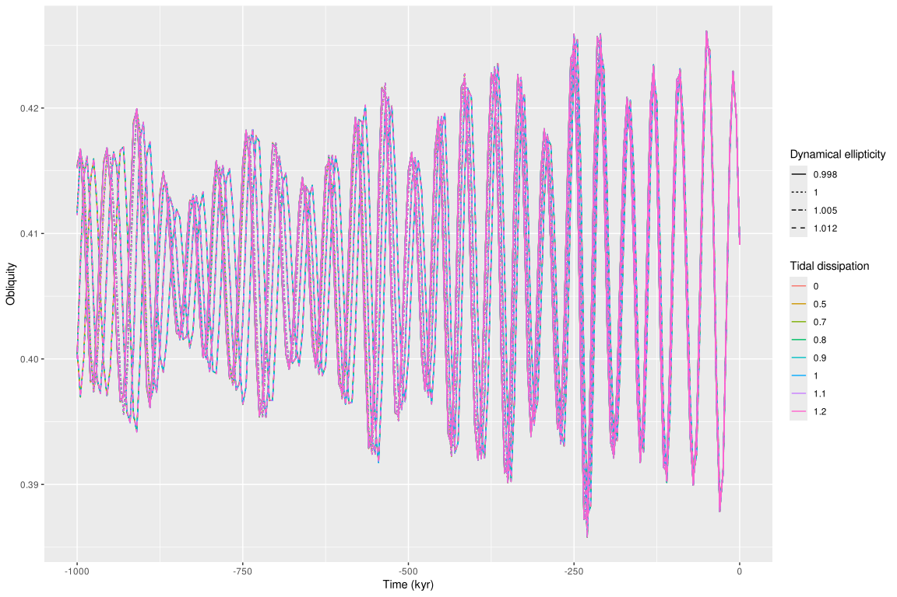

Analyze a grid of Td and Ed values
analyze_grid_td-ed.Rmd
library(tibble) # nice dataframes
library(dplyr) # mutate/select/filter/glimpse
#>
#> Attaching package: 'dplyr'
#> The following objects are masked from 'package:stats':
#>
#> filter, lag
#> The following objects are masked from 'package:base':
#>
#> intersect, setdiff, setequal, union
library(purrr) # pmap
library(tidyr) # unnest
library(ggplot2) # nice plots
library(snvecR) # this packageIntroduction
The function snvec() uses some of the parameters of a
full orbital solution (OS) such as ZB18a from Zeebe and Lourens (2019)
in combination with values for tidal dissipation (Td) and
dynamical ellipticity (Ed) to calculate precession and
obliquity (or tilt).
In this vignette we show how we would go about using
snvec() for a range of input values.
Create a grid of Td and Ed
We create a grid of input values for Td and Ed. The values in the grid are based on Zeebe and Lourens (2022) table 2.
biggrid <- expand.grid(Td = c(0, 0.5, 0.7, 0.8, 0.9, 1.0, 1.1, 1.2),
Ed = c(1.000, 0.998, 1.005, 1.012)) |>
as_tibble()
# that's 32 rows
biggrid
#> # A tibble: 32 × 2
#> Td Ed
#> <dbl> <dbl>
#> 1 0 1
#> 2 0.5 1
#> 3 0.7 1
#> 4 0.8 1
#> 5 0.9 1
#> 6 1 1
#> 7 1.1 1
#> 8 1.2 1
#> 9 0 0.998
#> 10 0.5 0.998
#> # ℹ 22 more rowsWe now add columns for important parameter values that do not vary between experiments, so that it is very clear from the output what the inputs were.
biggrid <- biggrid |>
# for now only for 1000 years at very high tolerance so it's fast
mutate(atol = 1e-4, tend = -1e3)
# this would be the real deal, the full 100--0 Ma results at medium
# tolerance.
## mutate(tol = 1e-7, tend = -1e5)Calculate a new list-column with the results
We’re going to use purrr::pmap() here, which allows you
to apply a function given a list of input values. We use it here to
create a list-column with the results.
This is some advanced R stuff, so feel free to read up on it if you want in Wickham et al., (2023). In particular, see the chapter on iteration for the basics, and many models for the full approach.
If we would apply the snvec() function here directly for
the full 100 Myr, it would quickly make R run out of memory, because it
would be storing all the timesteps for those 32 experiments. Instead, we
write a wrapper function that only stores the latest N timesteps.
snvec_tail <- function(..., n = 100) {
# do the fit with the parameters in ...
snvec(...) |>
# save only the last n values, that's where the differences are greatest
tail(n = n)
}Compute obliquity and precession for each parameter combination, and
save it in the new list-column sol.
biggrid <- biggrid |>
# apply our new function!
mutate(sol = pmap(list(td = Td, ed = Ed, tend = tend, atol = atol),
.f = snvec_tail,
# additional parameters to snvec_tail can go after!
quiet = TRUE, output = "nice", n = 100,
# I would strongly recommend against increasing the
# resolution too much, but for speed/illustration we
# prefer to do it here
tres = 5,
# interactively this makes a nice progress bar
.progress = "snvec on a grid")) #|>
#> snvec on a grid ■■■ 6% | ETA: 15s
#> snvec on a grid ■■■■■■■■■ 28% | ETA: 10s
#> snvec on a grid ■■■■■■■■■■■■■■■■ 50% | ETA: 7s
#> snvec on a grid ■■■■■■■■■■■■■■■■■■■■■■■ 75% | ETA: 3s
#> snvec on a grid ■■■■■■■■■■■■■■■■■■■■■■■■■■■■■■ 97% | ETA: 0s
# normally we would save the results to file, because these take quite a
# long time to calculate and we don't want to accidentally delete them.
## write_rds("out/2023-04-05_biggrid.rds")This would be how I would read in my old results (about 9MB on-disk for the final 1000 timesteps in the full 100 Myr simulations).
biggrid <- readr::read_rds("out/2023-04-05_biggrid.rds")Inspect results
Let’s look at the structure of the output:
glimpse(biggrid)
#> Rows: 32
#> Columns: 5
#> $ Td <dbl> 0.0, 0.5, 0.7, 0.8, 0.9, 1.0, 1.1, 1.2, 0.0, 0.5, 0.7, 0.8, 0.9, …
#> $ Ed <dbl> 1.000, 1.000, 1.000, 1.000, 1.000, 1.000, 1.000, 1.000, 0.998, 0.…
#> $ atol <dbl> 1e-04, 1e-04, 1e-04, 1e-04, 1e-04, 1e-04, 1e-04, 1e-04, 1e-04, 1e…
#> $ tend <dbl> -1000, -1000, -1000, -1000, -1000, -1000, -1000, -1000, -1000, -1…
#> $ sol <list> [<tbl_df[100 x 6]>], [<tbl_df[100 x 6]>], [<tbl_df[100 x 6]>], […We can see the list column sol in this result! But we’d
like to access the raw output, so we use unnest().
expanded <- biggrid |>
unnest(sol)
expanded
#> # A tibble: 3,200 × 10
#> Td Ed atol tend time age eei epl phi cp
#> <dbl> <dbl> <dbl> <dbl> <dbl> <dbl> <dbl> <dbl> <dbl> <dbl>
#> 1 0 1 0.0001 -1000 -184451250 505 0.0319 0.407 -2.21 -0.0299
#> 2 0 1 0.0001 -1000 -186277500 510 0.0290 0.399 -0.978 -0.0128
#> 3 0 1 0.0001 -1000 -188103750 515 0.0254 0.395 0.269 0.0214
#> 4 0 1 0.0001 -1000 -189930000 520 0.0212 0.398 1.52 0.0139
#> 5 0 1 0.0001 -1000 -191756250 525 0.0169 0.406 2.76 -0.00969
#> 6 0 1 0.0001 -1000 -193582500 530 0.0135 0.416 -2.31 -0.0132
#> 7 0 1 0.0001 -1000 -195408750 535 0.0121 0.422 -1.12 -0.00440
#> 8 0 1 0.0001 -1000 -197235000 540 0.0136 0.420 0.0696 0.00789
#> 9 0 1 0.0001 -1000 -199061250 545 0.0171 0.410 1.27 0.0168
#> 10 0 1 0.0001 -1000 -200887500 550 0.0214 0.399 2.50 0.00157
#> # ℹ 3,190 more rowsLet’s make a figure of these final values.
expanded |>
ggplot(aes(x = age, y = cp,
colour = factor(Td),
linetype = factor(Ed))) +
scale_x_reverse() +
labs(x = "Age (ka)",
y = "Climatic precession",
colour = "Tidal dissipation",
linetype = "Dynamical ellipticity") +
# make panels of plots
facet_grid(rows = vars(Td)) +
geom_line() +
# add eccentricity
geom_line(aes(y = eei), colour = "black")
Now the analysis can begin!
Alternatively: save the results for each row to file instead
If we care about the full outputs of each of the simulations, the
above approach will likely make you run out of memory (crash R). One way
to deal with this is to write each simulation to a file. We create a
filename from the variables and then use purrr::pwalk() in
stead of pmap().
This could look like this:
biggrid <- biggrid |>
# get rid of sol column
select(-sol) |>
# add a filename that's easy to break into relevant parameters later
# I write to tempdir here, but you might want to write to something like out/
mutate(file = glue::glue("{tempdir()}/2023-04-13_biggrid_{Td}_{Ed}_{atol}_{tend}.rds"))
biggrid
#> # A tibble: 32 × 5
#> Td Ed atol tend file
#> <dbl> <dbl> <dbl> <dbl> <glue>
#> 1 0 1 0.0001 -1000 /tmp/RtmpvRP9ND/2023-04-13_biggrid_0_1_1e-04_-1000.…
#> 2 0.5 1 0.0001 -1000 /tmp/RtmpvRP9ND/2023-04-13_biggrid_0.5_1_1e-04_-100…
#> 3 0.7 1 0.0001 -1000 /tmp/RtmpvRP9ND/2023-04-13_biggrid_0.7_1_1e-04_-100…
#> 4 0.8 1 0.0001 -1000 /tmp/RtmpvRP9ND/2023-04-13_biggrid_0.8_1_1e-04_-100…
#> 5 0.9 1 0.0001 -1000 /tmp/RtmpvRP9ND/2023-04-13_biggrid_0.9_1_1e-04_-100…
#> 6 1 1 0.0001 -1000 /tmp/RtmpvRP9ND/2023-04-13_biggrid_1_1_1e-04_-1000.…
#> 7 1.1 1 0.0001 -1000 /tmp/RtmpvRP9ND/2023-04-13_biggrid_1.1_1_1e-04_-100…
#> 8 1.2 1 0.0001 -1000 /tmp/RtmpvRP9ND/2023-04-13_biggrid_1.2_1_1e-04_-100…
#> 9 0 0.998 0.0001 -1000 /tmp/RtmpvRP9ND/2023-04-13_biggrid_0_0.998_1e-04_-1…
#> 10 0.5 0.998 0.0001 -1000 /tmp/RtmpvRP9ND/2023-04-13_biggrid_0.5_0.998_1e-04_…
#> # ℹ 22 more rowsWe write a new wrapper function that includes a file argument to save the outputs.
snvec_save <- function(..., file) {
snvec(...) |>
readr::write_rds(file)
cli::cli_inform("Wrote file {.file {file}}.")
}Calculate each time series’ obliquity and precession and save to file.
biggrid |>
# in this case we make sure that column names are identical to argument names
# so that the list (in this case tibble/data.frame) is matched to the correct
# arguments
rename(td = Td, ed = Ed, atol = atol) |>
purrr::pwalk(.f = snvec_save,
# additional parameters can go after!
quiet = TRUE, output = "nice", tres = 5,
# show progress bar
.progress = "snvec to file")
#> Wrote file /tmp/RtmpvRP9ND/2023-04-13_biggrid_0_1_1e-04_-1000.rds.
#> Wrote file /tmp/RtmpvRP9ND/2023-04-13_biggrid_0.5_1_1e-04_-1000.rds.
#> Wrote file /tmp/RtmpvRP9ND/2023-04-13_biggrid_0.7_1_1e-04_-1000.rds.
#> Wrote file /tmp/RtmpvRP9ND/2023-04-13_biggrid_0.8_1_1e-04_-1000.rds.
#> Wrote file /tmp/RtmpvRP9ND/2023-04-13_biggrid_0.9_1_1e-04_-1000.rds.
#> snvec to file ■■■■■■ 16% | ETA: 12s
#>
#> Wrote file /tmp/RtmpvRP9ND/2023-04-13_biggrid_1_1_1e-04_-1000.rds.
#> Wrote file /tmp/RtmpvRP9ND/2023-04-13_biggrid_1.1_1_1e-04_-1000.rds.
#> Wrote file /tmp/RtmpvRP9ND/2023-04-13_biggrid_1.2_1_1e-04_-1000.rds.
#> Wrote file /tmp/RtmpvRP9ND/2023-04-13_biggrid_0_0.998_1e-04_-1000.rds.
#> Wrote file /tmp/RtmpvRP9ND/2023-04-13_biggrid_0.5_0.998_1e-04_-1000.rds.
#> Wrote file /tmp/RtmpvRP9ND/2023-04-13_biggrid_0.7_0.998_1e-04_-1000.rds.
#> Wrote file /tmp/RtmpvRP9ND/2023-04-13_biggrid_0.8_0.998_1e-04_-1000.rds.
#> snvec to file ■■■■■■■■■■■■ 38% | ETA: 9s
#>
#> Wrote file /tmp/RtmpvRP9ND/2023-04-13_biggrid_0.9_0.998_1e-04_-1000.rds.
#> Wrote file /tmp/RtmpvRP9ND/2023-04-13_biggrid_1_0.998_1e-04_-1000.rds.
#> Wrote file /tmp/RtmpvRP9ND/2023-04-13_biggrid_1.1_0.998_1e-04_-1000.rds.
#> Wrote file /tmp/RtmpvRP9ND/2023-04-13_biggrid_1.2_0.998_1e-04_-1000.rds.
#> Wrote file /tmp/RtmpvRP9ND/2023-04-13_biggrid_0_1.005_1e-04_-1000.rds.
#> Wrote file /tmp/RtmpvRP9ND/2023-04-13_biggrid_0.5_1.005_1e-04_-1000.rds.
#> Wrote file /tmp/RtmpvRP9ND/2023-04-13_biggrid_0.7_1.005_1e-04_-1000.rds.
#> snvec to file ■■■■■■■■■■■■■■■■■■■ 59% | ETA: 6s
#>
#> Wrote file /tmp/RtmpvRP9ND/2023-04-13_biggrid_0.8_1.005_1e-04_-1000.rds.
#> Wrote file /tmp/RtmpvRP9ND/2023-04-13_biggrid_0.9_1.005_1e-04_-1000.rds.
#> Wrote file /tmp/RtmpvRP9ND/2023-04-13_biggrid_1_1.005_1e-04_-1000.rds.
#> Wrote file /tmp/RtmpvRP9ND/2023-04-13_biggrid_1.1_1.005_1e-04_-1000.rds.
#> Wrote file /tmp/RtmpvRP9ND/2023-04-13_biggrid_1.2_1.005_1e-04_-1000.rds.
#> Wrote file /tmp/RtmpvRP9ND/2023-04-13_biggrid_0_1.012_1e-04_-1000.rds.
#> snvec to file ■■■■■■■■■■■■■■■■■■■■■■■■ 78% | ETA: 3s
#>
#> Wrote file /tmp/RtmpvRP9ND/2023-04-13_biggrid_0.5_1.012_1e-04_-1000.rds.
#> Wrote file /tmp/RtmpvRP9ND/2023-04-13_biggrid_0.7_1.012_1e-04_-1000.rds.
#> Wrote file /tmp/RtmpvRP9ND/2023-04-13_biggrid_0.8_1.012_1e-04_-1000.rds.
#> Wrote file /tmp/RtmpvRP9ND/2023-04-13_biggrid_0.9_1.012_1e-04_-1000.rds.
#> Wrote file /tmp/RtmpvRP9ND/2023-04-13_biggrid_1_1.012_1e-04_-1000.rds.
#> Wrote file /tmp/RtmpvRP9ND/2023-04-13_biggrid_1.1_1.012_1e-04_-1000.rds.
#> Wrote file /tmp/RtmpvRP9ND/2023-04-13_biggrid_1.2_1.012_1e-04_-1000.rds.This would lead to the creation of one file per row, which you can
read in individually or for a certain subset using
readr::read_rds().
Below we do it for all the files and make a plot!
biggrid |> # limit to a few experiments
## slice(c(1, 15, 32)) |>
# in this case that's not necessary because we limited it to a very
# low-resolution (tres) and short time period (tend)
# read them in to list-column
mutate(fullsol = map(file, readr::read_rds)) |>
# unfold the list column
unnest(fullsol) |>
# plot the obliquity
ggplot(aes(x = age, y = epl,
colour = factor(Td),
linetype = factor(Ed))) +
labs(x = "Age (ka)", y = "Obliquity",
colour = "Tidal dissipation",
linetype = "Dynamical ellipticity") +
scale_x_reverse() +
## facet_grid(rows = vars(Td)) +
geom_line()
References
Zeebe, R. E., & Lourens, L. J. (2019). Solar System chaos and the Paleocene–Eocene boundary age constrained by geology and astronomy. Science, 365(6456), 926–929. doi:10.1126/science.aax0612.
Zeebe, R. E., & Lourens, L. J. (2022). A deep-time dating tool for paleo-applications utilizing obliquity and precession cycles: The role of dynamical ellipticity and tidal dissipation. Paleoceanography and Paleoclimatology, e2021PA004349. doi:10.1029/2021PA004349.
Zeebe, R. E. (2022). Reduced Variations in Earth’s and Mars’ Orbital Inclination and Earth’s Obliquity from 58 to 48 Myr ago due to Solar System Chaos. The Astronomical Journal, 164(3), 107. doi:10.3847/1538-3881/ac80f8.
Wikipedia page on Orbital Elements: https://en.wikipedia.org/wiki/Orbital_elements
Wickham, H., Çetinkaya-Rundel, M., & Grolemund, G. (2023). R for Data Science: Import, Tidy, Transform, Visualize, and Model Data (2nd edition). O’Reilly Media. https://r4ds.hadley.nz